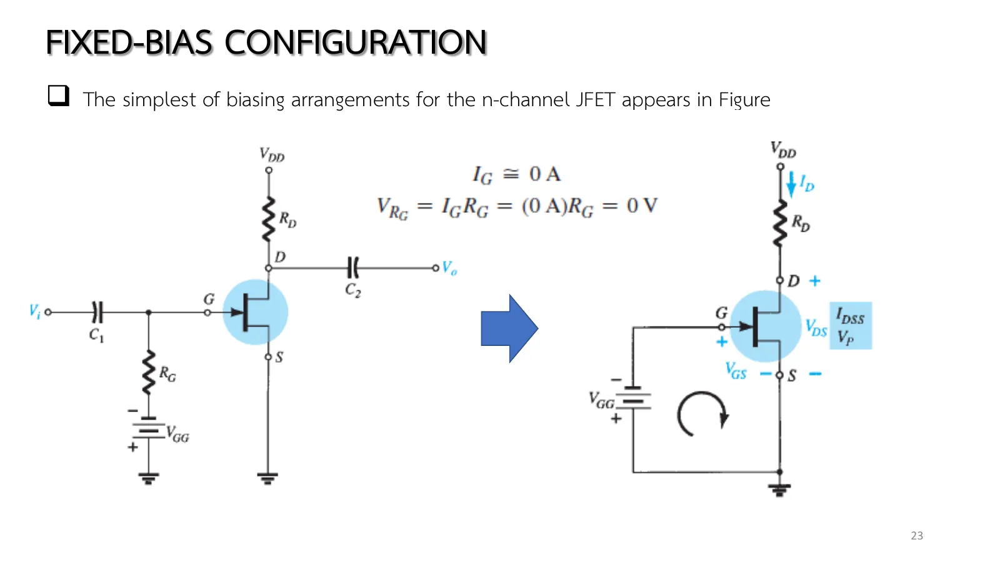
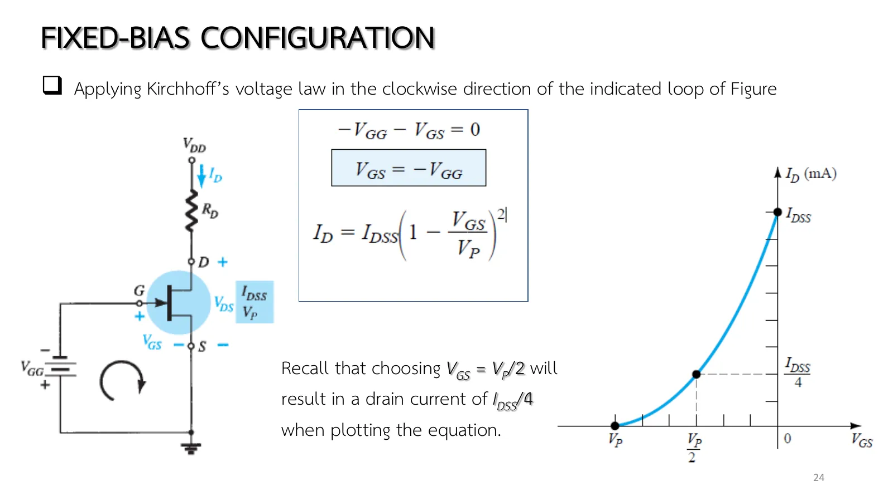
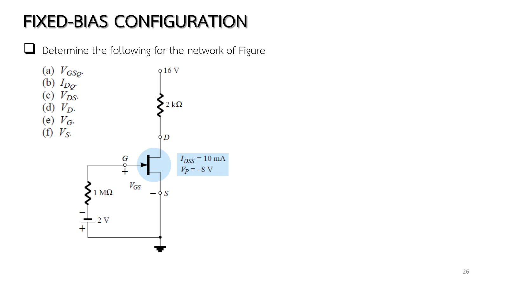

Want a junction field-effect transistor (JFET) to pass a particular current? The most direct way is to pin its gate voltage with a battery. That is fixed bias, the simplest bias circuit: \(V_{GS}\) is held by \(V_{GG}\), so it can be solved mathematically as well as graphically. The simplicity hides one trap, though, and even the book's own example slips slightly into it. This page starts from the general relations \(I_G \cong 0\), \(I_D = I_S\) and lays the network line over the transfer curve to find the operating point Q, in a circuit whose \(V_{GG}\), \(V_{DD}\), \(R_D\) and device you can change (section A); then come Example 7.1 both ways, the case \(V_{GG} = |V_P|/2\), and more practice (chapter 5 slides, pp. 22–27; Boylestad sections 7.1–7.2).
The general relations (slide p. 22, Eqs. 7.1–7.3): \(I_G \cong 0\), \(I_D = I_S\) and Shockley's equation belong to the device alone and do not change with the network (as long as it stays in the active region). The network adds its own equation, and the solution satisfies both.
The circuit (slide p. 23, Figs. 7.1–7.2): the coupling capacitors \(C_1\), \(C_2\) are open circuits for dc. \(R_G\) is there so that the signal \(V_i\) appears at the gate (chapter 8); for dc \(V_{R_G} = I_GR_G = 0\), so it is replaced by a short.
The gate–source loop (slide p. 24): Kirchhoff's voltage law \(-V_{GG} - V_{GS} = 0\) gives \(V_{GS} = -V_{GG}\) (Eq. 7.5), a constant, hence "fixed bias". Substitute into Shockley's equation for \(I_D\) at once (the mathematical approach) or draw the vertical line at \(V_{GS} = -V_{GG}\) across the transfer curve (the graphical approach, Figs. 7.3–7.4), sketching the curve from three points: \(I_{DSS}\), \(V_P\) and (\(V_P/2\), \(I_{DSS}/4\)).
The drain–source loop (slide p. 25): \(V_{DS} = V_{DD} - I_DR_D\) (Eq. 7.6), and since \(V_S\) = 0, \(V_D = V_{DS}\), \(V_G = V_{GS}\) (Eqs. 7.7–7.9). The meters of Fig. 7.5 would read these Q values (try the simulation's meter).
Limits: two supplies are needed, so the circuit is seldom used; and Shockley's equation is only right in the saturation region \(V_{DS} \ge V_{GS} - V_P\), which the book does not check. In Example 7.1 the condition narrowly fails (problem 1).
Page 5.2 ended with the rules of slide p. 22: \(I_G \cong 0\), \(I_D = I_S\) and Shockley's equation. Now they go to work. Slide p. 23 draws the fixed-bias circuit (Fig. 7.1): \(V_{DD}\) and \(R_D\) on the drain side, \(V_{GG}\) and \(R_G\) on the gate side, and the coupling capacitors \(C_1\), \(C_2\).
For dc the capacitors are open circuits, and since \(I_G \cong 0\) the voltage across \(R_G\) is \(I_GR_G = 0\), so \(R_G\) can be replaced by a short (Fig. 7.2). What is left is \(V_{GG}\) straight across gate and source. Why have \(R_G\) at all? So that the signal \(V_i\) can appear at the gate, the subject of the book's chapter 8.

สไลด์บทที่ 5 หน้า 23: วงจรไบแอสคงที่และวงจรสำหรับกระแสตรง (รูป 7.1–7.2) · แตะรูปเพื่อขยายChapter 5 slide p. 23: the fixed-bias circuit and its dc network (Figs. 7.1–7.2) · tap to enlarge
Slide p. 24 walks the gate–source loop to \(V_{GS} = -V_{GG}\), a constant that ignores \(I_D\) completely, so on the transfer graph it is a vertical line, and the curve is sketched quickly with the shortcut \(V_P/2\) → \(I_{DSS}/4\). Slide p. 25 walks the drain loop to \(V_{DS} = V_{DD} - I_DR_D\) and shows the meters of Fig. 7.5 reading Q on a real circuit. Measure the same way with the simulation's meter, then raise \(R_D\): \(V_{GS}\) does not move, but Q on the lower graph slides toward the pinch-off locus.

สไลด์หน้า 24: \(V_{GS} = -V_{GG}\) และการวาดเส้นโค้งของ Shockley (รูป 7.3) · แตะรูปเพื่อขยายSlide p. 24: \(V_{GS} = -V_{GG}\) and plotting Shockley's curve (Fig. 7.3) · tap to enlargeสไลด์หน้า 25: วงเดรน–ซอร์ส และมิเตอร์วัดค่า Q (รูป 7.5) · แตะรูปเพื่อขยายSlide p. 25: the drain–source loop and the meters reading Q (Fig. 7.5) · tap to enlarge
Start from the circuit of Example 7.1. The upper graph is the transfer curve with the vertical line at \(V_{GS} = -V_{GG}\) (Fig. 7.4); the lower one the drain characteristics with the load line \(V_{DS} = V_{DD} - I_DR_D\) and the pinch-off locus. The badge says whether Q is in saturation or has slipped into the ohmic region. Raise \(R_D\) until Q crosses the locus and watch the simulated \(I_D\) fall below Shockley's value.
1
Example 7.1: วิธีคณิตศาสตร์และวิธีกราฟ
Example 7.1: the mathematical and the graphical approach
สไลด์หน้า 26 · Boylestad Example 7.1 (รูป 7.6–7.7)
Slide p. 26 · Boylestad Example 7.1 (Figs. 7.6–7.7)
Slide p. 26 is the book's Example 7.1: six questions answered by the two loops just walked. Before opening the solution, find \(V_{DS}\), then check the condition the book skips: is \(V_{DS}\) larger than \(V_{GS} - V_P\)? If not, is Q really in saturation?

สไลด์หน้า 26: โจทย์ Example 7.1 (รูป 7.6) · แตะรูปเพื่อขยายSlide p. 26: Example 7.1 (Fig. 7.6) · tap to enlarge
The side panel shows the transfer curve with the vertical line, then the node voltages, and finally the load line on the drain characteristics. Hover over the transistor to read its region. Try it first.
2
เมื่อ \(V_{GG} = |V_P|/2\): จุดลัดของตาราง 6.1
When \(V_{GG} = |V_P|/2\): the shortcut of Table 6.1
วงจรของ Example 7.1 ด้วย \(V_{GG}\) = 4 V
The circuit of Example 7.1 with \(V_{GG}\) = 4 V
โจทย์
วงจรของ Example 7.1 แต่ \(V_{GG}\) = 4 V จงหา \(I_D\) และ \(V_{DS}\) แล้วตรวจว่าอยู่ในย่านอิ่มตัวหรือไม่
Problem
The circuit of Example 7.1 with \(V_{GG}\) = 4 V. Find \(I_D\) and \(V_{DS}\), and check whether the JFET is in saturation.
ลองตอบก่อน
Try it first.
C
ฝึกเพิ่ม
More practice
\(I_G\) = 0 · ตอบทศนิยมอย่างน้อย 2 ตำแหน่ง
\(I_G\) = 0 · give at least 2 decimal places
ลองทำดู 1 — จุด Q กับแนวพินช์ออฟ
ส่วน A ด้วยค่าของ Example 7.1 ป้ายบอก "ย่านโอห์มิก": จุด Q อยู่ซ้ายแนวพินช์ออฟเล็กน้อย ลด \(R_D\) เหลือ 1.5 kΩ ป้ายเปลี่ยนเป็นย่านอิ่มตัว และ \(I_D\) ของภาพจำลองกลับมาเท่ากับ 5.625 mA ของ Shockley
In section A with the values of Example 7.1 the badge says "ohmic region": Q sits just left of the locus. Lower \(R_D\) to 1.5 kΩ, the badge turns to saturation, and the simulated \(I_D\) comes back to Shockley's 5.625 mA.
Raise \(R_D\) to 4 kΩ: the load line steepens, Q goes deep into the ohmic region, and \(I_D\) falls to about 3.6 mA although \(V_{GS}\) is unchanged. This is why \(V_{DS}\) must always be checked.
Slide \(V_{GG}\) to 8 V (= \(|V_P|\)): the vertical line reaches the end of the curve, the current is zero and \(V_{DS} = V_{DD}\).
Try this 2 — the meters of Fig. 7.5
Open the simulation's meter (button at the top right), clamp the drain lead to read \(I_{D_Q}\), and probe gate and source to read \(V_{GS_Q}\), as in Fig. 7.5.
Problem 2: which \(V_{GG}\) gives \(I_D = I_{DSS}/2\)? \(V_{GG} = -0.3V_P\) = 2.4 V (Table 6.1).
Chapter 5 slides pp. 22–27 · Boylestad & Nashelsky, 11th ed., sections 7.1–7.2 (Figs. 7.1–7.7, Eqs. 7.1–7.9, Example 7.1)